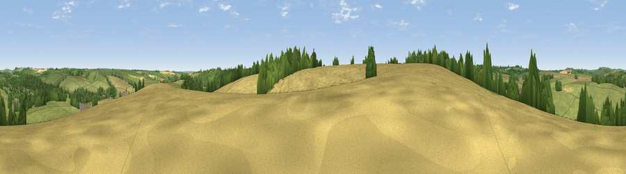

Viewpoint near Lambourn
#36181 in England · top 72% of its area beats it · near LambournThe view, rendered

A 360° render of this exact spot computed from the terrain model, tree cover and land cover — summer colours, afternoon light, calibrated against photographs of famous viewpoints. Real trees, hedges and buildings will differ in detail.
The panorama
Grey silhouette: terrain skyline in each direction (720 bearings, Earth curvature and refraction included). Dashed green: skyline with trees (+15 m) and buildings (+8 m) as obstacles. Blue strip: how far the ground is visible on each bearing.
Where the view opens
Wedge length = distance to the farthest visible ground on that bearing (vegetation-aware). Rings at 10, 25 and 50 km.
What fills the view
48% grassland · 35% cropland · 15% woodland · 2% built-up
Angular shares of the visible panorama (visual magnitude), not map area. Landscape diversity 0.47 (0–1 Shannon).
Key numbers
More beautiful places nearby
The staircase of upgrades: each row has a higher view potential than everything closer. Driving times are estimates from straight-line distance, calibrated against real road routing — check an actual route before setting out.
| Place | Direction | Drive | Score |
|---|---|---|---|
| Viewpoint near Eastbury | ENE · 3 km | ~7 min | 48.4 |
| Viewpoint near Baydon | WNW · 4 km | ~10 min | 51.9 |
| Viewpoint near Ashbury | NW · 6 km | ~13 min | 57.0 |
| Viewpoint near Bishopstone | WNW · 7 km | ~15 min | 57.4 |
| Hackpen Hill | NNE · 8 km | ~17 min | 59.2 |
| Seven Acre Hill | NNE · 8 km | ~17 min | 66.6 |
| Viewpoint near Kingston Lisle | N · 9 km | ~17 min | 68.5 |
| Viewpoint near Woolstone | NNW · 9 km | ~18 min | 76.7 |
51.49621, -1.54007 · source: screening · position refined by local search. Computed location — check access rights before visiting.